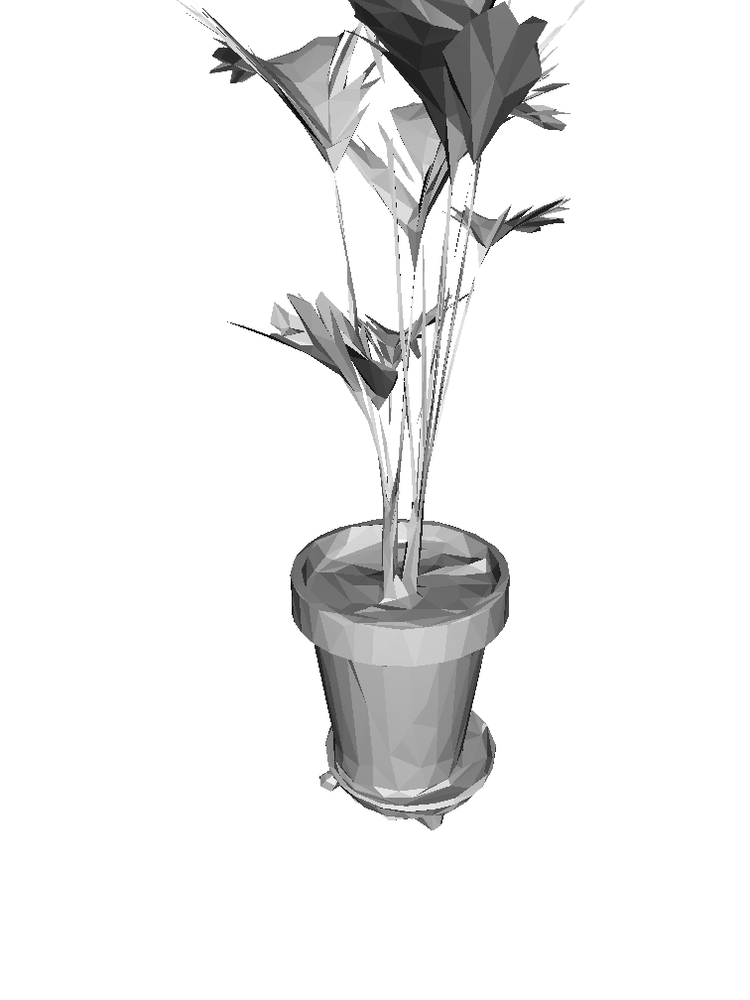
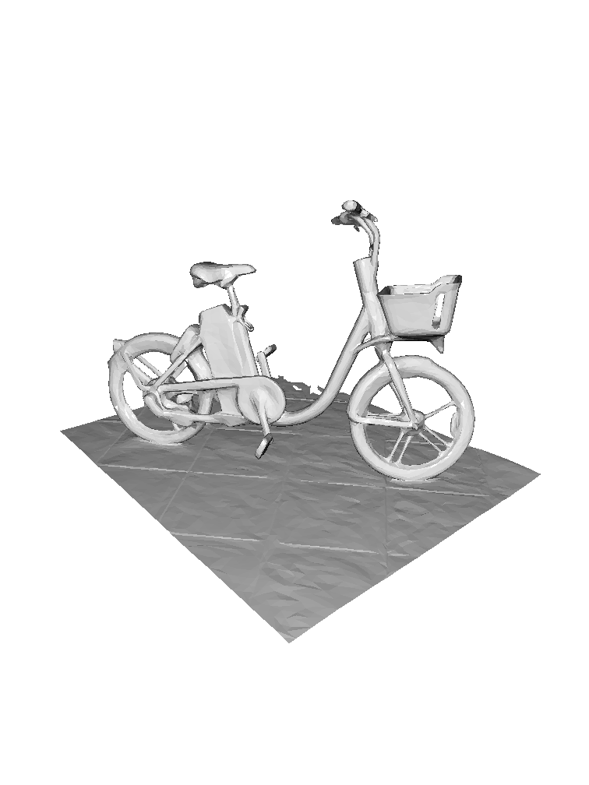

AR-capture








@inproceedings{choi2023tmo,
title = {TMO: Textured Mesh Acquisition of Objects with a Mobile Device by using Differentiable Rendering},
author = {Jaehoon Choi and Dongki Jung and Taejae Lee and Sangwook Kim and Youngdon Jung and Dinesh Manocha and Donghwan Lee},
booktitle = {CVPR},
year = {2023}
}